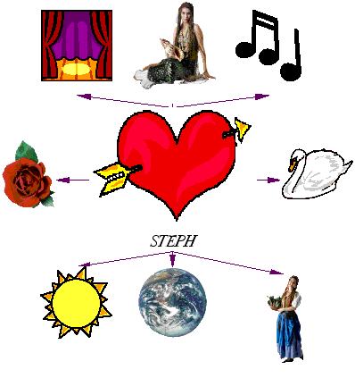

|  |
So this page is dedicated to Stephanie at the Uptown
Cafe, who in addition to being
the prettiest girl in the universe, is also
all woman, a great waitress, an outstanding
actress, has the most
beautiful voice, great taste, charm, wit, and , I don't know?
Integrity? I could go on forever, or until I ran out of compliments. She's got the
greatest sense of humor. I just laugh and smile all the time when she's
around and miss
her when she's gone. And if I can't be her husband or
boyfriend, I want to be her
father/brother/friend/fan because she blows me
away every time and I love it and want
more of it and dedicate all my
struggles to her cause, because she is the bomb, the
inspiration, and a
good excuse to endure this wretched world(i guess it's not that bad
really.)